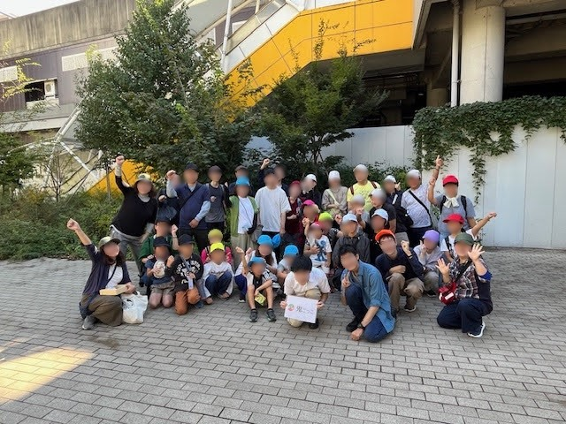
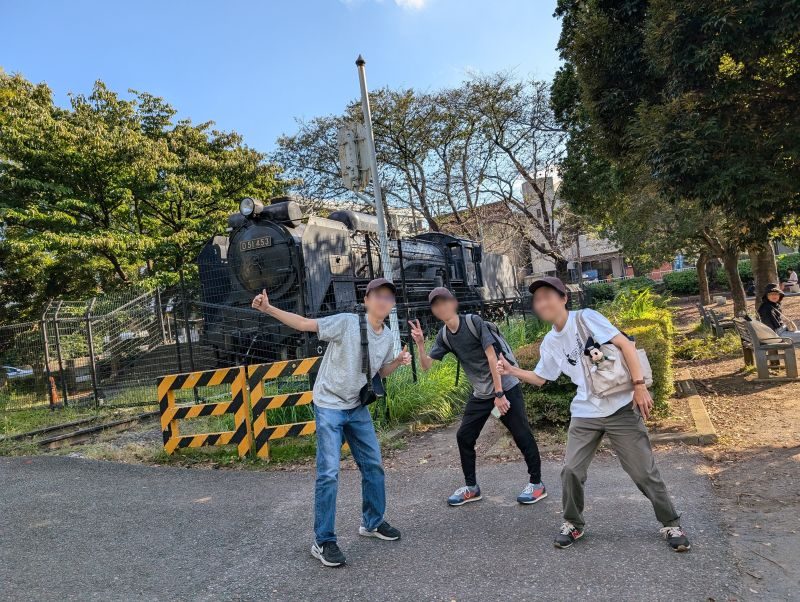
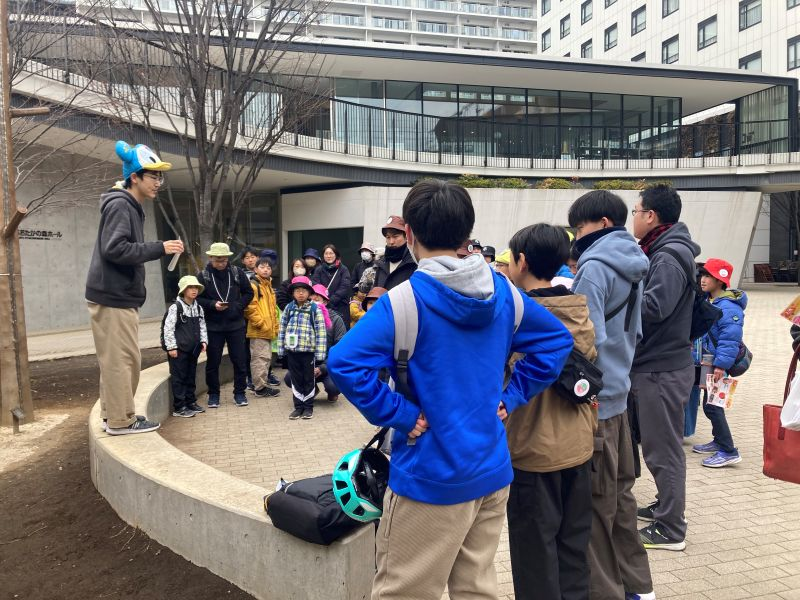
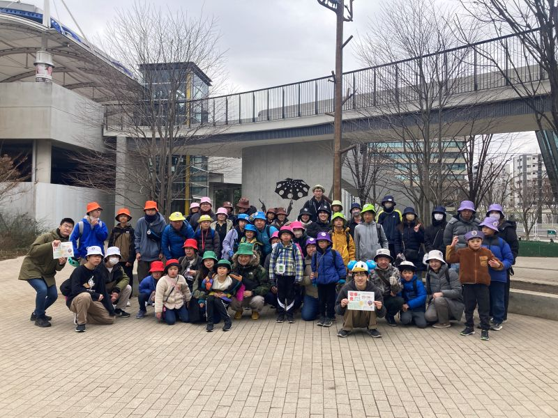

過去のイベント
これまでに開催した電車で鬼ごっこイベントをご紹介します。
流山&柏 鬼ごっこ

参加者集合写真

ゲーム中の様子
イベント詳細
- 開催日: 2024年10月12日（土）
- 開催場所: 流山・柏エリア
- 参加者数: 36名
- 内容: つくばエクスプレスや東武野田線、JR常磐線、流鉄流山線を活用した電車鬼ごっこ。ミッションを攻略しながら行うチーム戦の鬼ごっこを実施。
参加者の声: 「頭を使いました。頭脳戦が加わった鬼ごっこでした」「ゲームとしての面白さと、ミッションを通して町を知ることができ、新しい発見がありました」
電車で鬼ごっこ ～流山&柏 #2～

開会式の様子

集合写真
イベント詳細
- 開催日: 2025年3月8日（土）
- 開催場所: 流山・柏エリア（つくばエクスプレス・東武野田線）
- 参加者数: 約50名
- 内容: 前回の好評を受けて第2回目を開催。一回目とは異なるミッションでゲームを構築しました。
参加者の声: 「大人も真剣に逃走経路を考えたり、とても楽しめました」「たくさん歩けて健康的です」「街中で鬼ごっこできるのは楽しかったです」
「電車で鬼ごっこ ～都区内パス版～」にご期待ください！
これまでの経験を活かし、さらに楽しい都区内パス版を企画中です。